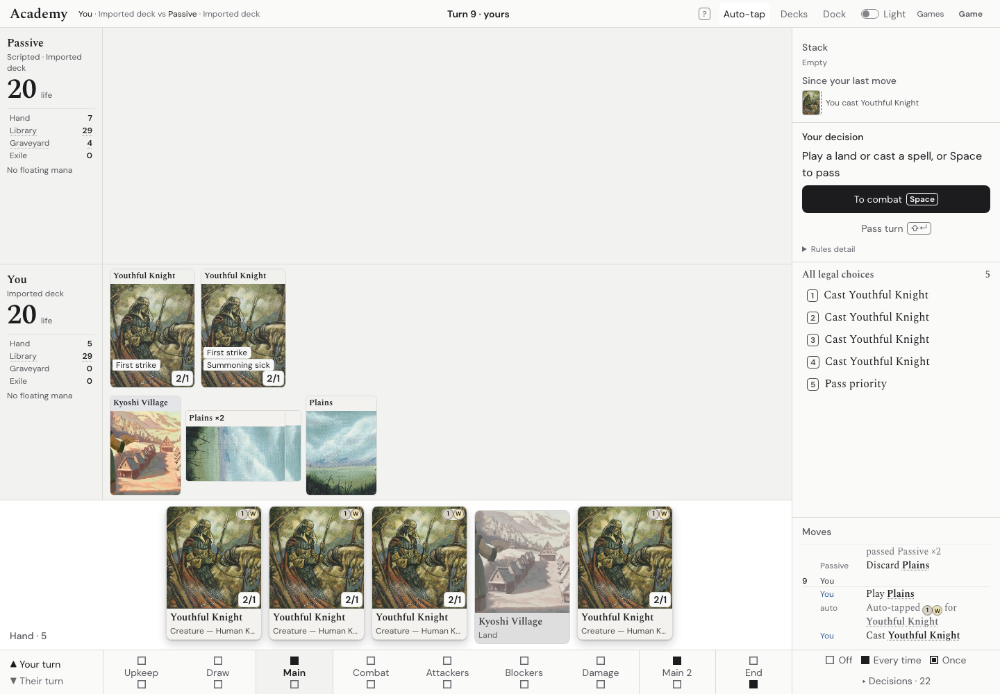
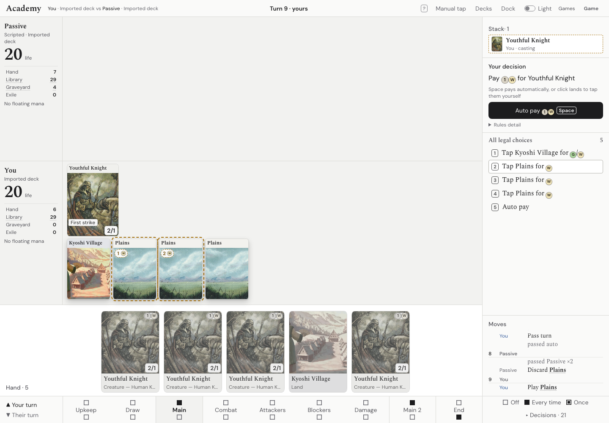
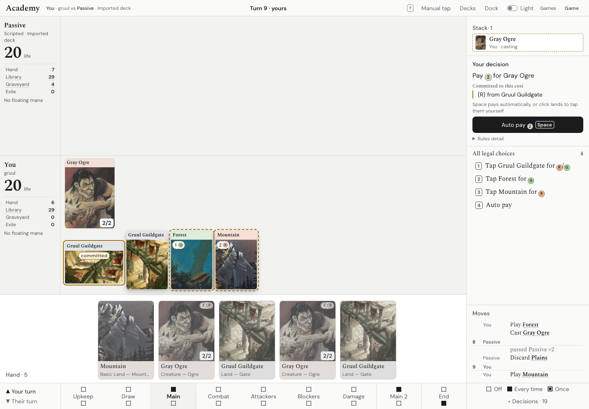

Compress (87c42e1734) changed mana.rs after the last build. I rebuilt the release
extension and the static SPA before running anything. Browser games ran in a configured launch
(managym academy play --opponent passive --seed 11, imported decks) driven by headless Chromium.
The Ward and LLM-text checks used a real seeded game through Academy's GameSession and through managym.Env.
No scenario helpers were used.
Deck: 14 Kyoshi Village / 10 Plains / 16 Youthful Knight against 40 Plains.
Default table (Auto-tap on). No payment stop ever appeared. In the Moves log, every cast read
Auto-tapped {1}{W} for Youthful Knight, and the mana renders as pips. This is Academy's client Auto-tap
from main (#610), which is on by default and submits "Pay the cost". It is not part of this change.

Manual tap. With Village + Plains, the Knight was cast with no stop. With Village + 3 Plains, each cast stopped with
Tap Kyoshi Village for {G}/{W}, three Tap Plains for {W} and Pay the cost.
Clicking the Village tap finished the payment: no color modal and no second stop (7 casts).

The 3-land exact case cast with no stop. With 4 lands the payment stopped. Tapping a Guildgate asked
Choose the mana to add. After Add {R} it stopped at Pay {2}, showing
{R} from Gruul Guildgate as committed and pips on every tap offer. This matched in all 5 casts.

The hero ran Mountain / Kyoshi Village / Plains / Lightning Bolt and Bolted the opponent's Waterfall Aerialist (random opponent; seeds 3, 5 and 7).
The stops offered per-source taps beside Pay the cost (Waterfall Aerialist) and Decline, as planned.
Defect: with two or more Villages, the second Village tap opened an Add {G} / Add {W} modal,
even though either color pays the generic {2} whole. The cause: equivalent_mana_choices credited each new unit
on its own in a resolution payment. It refused whenever the first tap's mana was already floating.
Fix (managym/src/flow/mana.rs): in a resolution payment, if a mode's pool pays the cost exactly and every unit is spent,
that mode completes the payment, so all such modes are equivalent.
I added a regression case to ward_offers_per_source_taps_on_real_choice_and_skips_when_forced. It fails without the fix
(left: [ChooseMode…, ChooseMode…]) and passes with it. After a rebuild, the same seeds show:
STOP ['Tap Kyoshi Village for {G}/{W}' ×3, 'Tap Plains for {W}', 'Pay the cost (Waterfall Aerialist)', 'Decline']
STOP ['Tap Kyoshi Village for {G}/{W}' ×2, 'Tap Plains for {W}', 'Pay the cost (Waterfall Aerialist)', 'Decline']
STOP ['Pay the cost (Waterfall Aerialist)', 'Decline'] # no modal any more
Pass 5 rendered the dual and the basics beside it differently:
A0 Tap Kyoshi Village for {G}/{W} (P1); ability 2
A1 Tap for mana P2 (Plains). Native description: Tap Plains for {W}
The task's direction says tapping a dual and tapping a basic are the same thing. The dual now reads exactly like the basics, with no ability index and no "Activate ability". Basic and convoke wording is unchanged:
A0 Tap for mana P1 (Kyoshi Village). Native description: Tap Kyoshi Village for {G}/{W}
A1 Tap for mana P2 (Plains). Native description: Tap Plains for {W}
The open question (whether to bump manabot-text-10) is in scratch/questions.md.
cargo nextest -E 'binary(source_taps)': 32/32 passed with the fix. The new assertion fails without it.pytest dual-land payment, payment preview, skip-forced, recording narration and text observation: 120 passed. Text, manifest-text, native-observation-contract and casting-profile tests: 137 passed.Tap Kyoshi Village for {W}
appears in Moves only for standalone taps. I did not see one in these games; it is covered by test_recording_narration.py.{R} as text rather than pips. This predates the change.Pay the cost / Decline remains a stop. Decline is a real legal choice, so this is correct.bench_search against base, which is the gate's job.